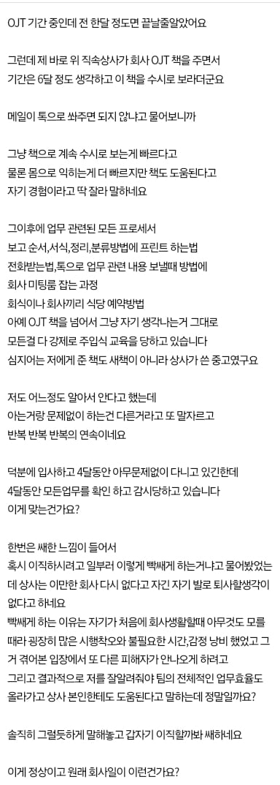

사회초년생이 첫 직장생활이 힘들다는 글.JPG
댓글
감사한줄 알아야지
알잘딱 하라고 개같이 깨져가면서 배워봐야 참스승 이였구나 눈물 흘리지
들어오니 이주일만에 상사가 런쳤을때 막막함이란
자기일하면서 시간내서 잘했는지 4달동안 일 봐주고있다? 천사지
나는 전 상사가 마이크로매니징하는 타입이라 ㅈㄴ 싫었는데
다음 부서는 자유방임형이라 재택하면서 근무시간 절반 정도는 딸치거나 게임했는데 고과는 최상으로 받음
걍 사람 성격, 업무 성격에 따라 다른 거 같아
딸쳤음 청년 ㄷㄷㄷㄷ
현자 노동자 ㄷㄷ
나도 재택이긴한데 업무는 빡세게 해야 성과가 나오는 업무인디
대체 무슨 업무하시길래 딸치며 고과 최상 ㄷㄷ
난 내 재량으로 모든 걸 할 수 있게 되니 그냥 존나 풀어주면서 했는데
빡세지만 천사 상사
나는 처음에 들어왔을 때 가르쳐준 건 하나도 없었음. 진짜 막무가내로 일 받아가면서 겨우 겨우 내침.
근데 커버를 다 해줬음. 초반에 사고도 많이 치고 했는데 처음이니 그럴 수 있다고 다 이해주더라고
덕분에 개같이 구르긴 했는데 잘 자리 잡았음.
나도 첫직장을 원글 같은데 갔으면 존나 갑갑하긴 했을거 같긴 함.
그냥 책도 아니고 물려받는 책이면 그 간의 메모도 다 기록되어 있을 건데 그걸 주면서 옆에서 이미 알고 있다고 착각하는 것도 확인시키면서 알려준다고? 이런 선임이 어딨어
글만 봐도 노개념노답이네
제대로 된 매뉴얼이면 땡큐지
천사네ㄷㄷㄷㄷ
난 절하고받는다
배가 불렀네
메뉴얼? 좆소가면 일단 일터져있고 하라고 시전
못하면 이것도 못하면서 돈을??? 대졸이 이것도 못해??
야근 주말 출근 해서 겨우 막아야 본전 못하면 계속 욕먹거나 짤림.
메뉴얼이 있고 알려주는 사람이 있는게 좋은곳이
존나 비정상적으로 개좋은 상사네
빼면 뭐 어쩔거게 ㅋㅋㅋㅋ 분에 넘치게 해줘도 어떻게 더 꿀빨까부터 생각하는거같은데
진짜 첫회사에서 방치 당해보니까 못해먹겠더라
저건 진짜 천사임 그냥 절하고 모셔라
전임자 서류보고 알아서 해 하는데 앉아봐야 ㅋ
문서랑 이전 처리내역 보고 알아서 하면서
안알려줬지만 전임자는 했던 니업무인데 왜 안했냐고 갈굼먹어봐야 좋아할새끼군
아니 미칠듯이 철저하고 신입 교육관이 옳게된 상사인데 ㄷㄷㄷ 저런 사람을 첫회사에서 직속으로 만날 수 있는 확률이 있다구..?
난 입사 6개월만에 새로운팀 만든다고 팀장으로 승진함
대뜸 시스템도 만들어야하고 사업들 유치해오고 파이키운다고 혼자 염병떨다가 신설 2년차에 2명의 팀원이 생김(그전엔 나혼자)
내가 전부 통제하는게 아니라 시스템들을 일부씩 떼서 업무를 맡기기 시작하고 같이 공부하고 같이 발전하다보니
새로운 직원오면 업무 주기가 매우 힘들더라
그래서 사업이나 일이 흘러가다보면 메뉴얼이 생기는거 같다. 아무나 와도 적응해서 진행할 수 있게 하는 메뉴얼.
팀원 처음 들어오면서 메뉴얼작업을 엄청 빡세게함
근데 이게 사회복지쪽은 사람 상대하는거라 메뉴얼과 별개로 라포형성과 관련된 일들이 많다보니
새 직원이 와도 엑셀정리,간단한 사무업무로 시작해서 반년정도 계속 사업을 알려줘도 좀 힘듬
내가 형성한 라포를 떼서 넣어줘야하다보니 결국은 나한테 다 오더라고
초년생일때 저런식으로 모든걸 다 이게 맞다 이건 잘못됐다 정해주는 사람 만나면 답답하고 이게 뭐하는건지 싶은 건 당연함.
근데 저게 맞는 방식이고, 솔직히 회사에서 저 교육을 확실하고 군더더기 없이 시켜주고 투입해야하지만 현실적으로 부서별로 다 다른 업무와 스타일을 맞출 수 없기때문에 공통되는 교육만 하고 부서로 보내는 거고 부서에서 개별로 진행하는 거지.
저 사람도 나중에 보면 저런 선임이 있어서 고마웠다고 느낄거임. 근데 처음에는 답답해하는 게 당연함 ㅋㅋㅋ
나도 마이크로 매니징 타입이랑 존나 안맞음
그냥 바로 할일 주면 내가 해보고 안되면 물어보는게 좋더라.
난 일단 간단히 얘기해서 방향 맞추고 초안 빠르게 작성해서 던지고
피드백 받아서 디테일 추가하는 방식이 좋더라
저게 좋은거긴 한데 그만큼 초보자 입장에선 압박감으로 작용할 수가 있음.
'내가 이정도나 해야 한다고' 라는 막막함이 크게 다가올 시기가 신입시절이라. 그래서 강도조절을 잘 해야 함.
저렇게 잘 알려주는 사람은 존재하지 않음
장르가 현대판타지네
원래 병신은 잘해줘도 지랄이지
존나 착한 선배네.. 그리고 이해하려고 노력도 안하는 등신 후배고
에이 저런 천사가 어딨음? 주작임